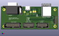
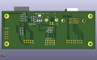
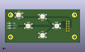
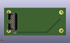

Aufbauhinweise
Werkzeug/Arbeitsweise
Ich gebe hier mal meine Arbeitsweise wieder - es gibt mehrere Wege zum Ziel. Für mich funktioniert es so.
Gutes Flussmittel ist für die SMD Komponenten wichtig! Das macht ohne keinen Spaß!
Ich löte alles mit einer chinesischen Lötstation von Amazon (Lytool). Die Lötspitze ist eine Miniwelle. Die ist groß genug, um schnell Hitze auf die Pads zu bekommen.
Löttemperatur zwischen 320-350°C.
Bei den SMD Pads ist weniger Lötzinn manchmal mehr. Wenn da zu viel drauf ist, bekomme ich schnell Kurzschlüsse.
Hier braucht es dann Entlötlitze - am besten mit flüssigem Flussmittel vorher benetzen. Die Hitze muss an die Lötstelle - aber halt auch nicht zu viel…
Licht! Viel hilft viel.
Lupenlampe! Bei SMD Kram geht es bei mir nicht ohne. Nur damit kann ich entspannt löten.
ESD Pinzette ist klar? Versucht die Widerstände nicht mit den Fingern zum Ziel zu bringen (und dann anzulöten…).
Optionale Komponenten
Die Platine muss nicht voll bestückt werden - je nach Einsatz am Zielsystem.
Video Ausgang
Für die Ausgabe benötigt ihr entweder die VGA Buchse ODER die IDC16 Steckerleiste.
Die IDC16 Steckerleiste orientiert sich an einer Standard Belegung. Ich habe aber selbst kein passendes Adapterkabel zum Testen gehabt - im Zweifel baut man sich das mit Flachbandkabel und D-SUB 15 HD Buchse selbst.
Videoeingang
Wenn der Adapter NUR an einem PC1715 betrieben wird, dann können die Pullup Widerstände R11-R13 entfallen. Die sind nur für Open Collector Ausgänge beim A7100 und EC1834MON nötig.
Spannungsversorgung
Die Spannungsversorgung kann entweder über die 5V USB erfolgen, oder über den 5V Eingang von J1.
Auch ist eine direkte Versorgung mit 3,3V (Pin 3) über J1 möglich. Theoretisch könnte man den auch als Ausgang nutzen, um eine andere Platine zu versorgen. Der LM1117MP-3.3 (je nach Typ) kann locker bis zu 800mA liefern - ABER:
Die Diode D1 kann im Dauerbetrieb nur 200mA ab - das reicht eigentlich nur für den ESP32!
Theoretisch könnte man den LM1117MP-3.3 und C2 weg lassen, müsste zum flashen aber dann den ESP32 separat mit Strom versorgen.
Die Diode D1 könnte man auch brücken und entfallen lassen - dann MUSS aber sichergestellt werden, dass wenn der PC angeschlossen wird, auf J1 Pin 1+2 nicht mit irgendwas anderem verbunden sind (externe Stromversorgung)!
USB
Die USB Buchse ist zum flashen und zur Stromversorgung gedacht.
Hier ist eine USB B Buchse mit Durchkontaktierung vorgesehen, alternativ eine SMD USB-C 16(!) polig.
Wenn die USB B Buchse bestückt ist, sollte aufgepasst werden, dass die Pads der USB-C Buchse nicht vom Gehäuse der USB-B Buchse kurz geschlossen werden!
Diese dann am besten mit etwas isolieren.
Beim auflöten der USB C Buchse - auf die Pads nur wenig Lötzinn über die Lötspitze auftragen. Das sollte nicht zu hoch werden.
Debugging
Den Port müsst ihr nicht bestücken. Der ist nur zur Anpassung an weitere System nötig, wenn hier auch die Software angepasst werden muss.
JP1 BOOT
Der sollte im normalen Betrieb gesteckt sein. Ohne den, bleibt er im Bootlader und wartet auf Firmwareupdate. (korrigiert mich, wenn das nicht 100% stimmt)
KEYPAD
Das Keypad ist nur für die initiale Konfiguration zwingend nötig, wird dann (außer evtl. beim PC1715) normal nicht weiter benötigt.
Beim PC1715 könnte man es zum nachjustieren des Videosignals nutzen wollen.
 
Aufbau
Ich empfehle, zuerst den ESP32S3 aufzulöten.
In meinen ersten Versuchen bin ich mit Lötpaste und Heißluft gescheitert. Ich konnte die Paste nicht fein genug dosieren.
Am einfachsten funktioniert bei mir folgende Methode:
Die Pads werden leicht mit Flussmittel benetzt. Ich mache einen Probelauf und schiebe das Modul mit der Hand in die Position (Lupenlampe). Immer auf alle Pads und die Bauteilmarkierung achten.
Ich verzinne ein Pad leicht, auf der Seite, auf der ich den Lötkolben halte. Und nicht gerade Masse oder die 3,3V Leitung!
Ich halte den Lötkolben an das Pad und erhitze es, während ich mit der anderen Hand den ESP32 in Position schiebe. Das Lötzinn erkalten lassen und die Position prüfen. Wenn nicht alle Pads korrekt sitzen, dann korrigieren.
Sobald die Position passt, nehme ich ein Pad an einer anderen Seite und verzinne dort wieder einen GPIO Pin (keine Masse, Spannungsversorgung).
Achtung - den ESP32 hier nur festhalten, keine seitliche Kraft aufwenden - sonst reißt das gelötete Pad ab!
Ist das zweite Pad gelötet (gut kontrollieren), ein Pad auf der nächsten Seite anlöten.
Sobald 3 Pads gelötet sind, sollte man den ESP32 in Ruhe anlöten können.
Ggfs. Flussmittel nachtragen.
Am Besten geht das, wenn man erst das Pad erhitzt, etwas verzinnt und dann an das Halbloch vom ESP32 heranführt.
Ist etwas zu viel Lötzinn dran gekommen, kann man, wenn weitere Pads verzinnt sind, auch Mal mit der flachen Seite an den Pads entlangziehen und das Lötzinn gleichmäßig verteilen.
Anschließend kontrollieren, das die Pads und die Kontakte vom ESP32 auch Kontakt haben!
Die Massepads unter dem ESP32 müssen nicht zwingend gelötet werden - die sind eher zur Wäremeabfuhr gedacht.
Ist der Punkt fertig, wird es leichter!
Jetzt die Platine umdrehen. Hier bei allen Widerständen je einen Pin leicht verzinnen (nach Auftragen vom Flussmittel).
Ich packe immer gleich alle Widerstände einer Sorte aus und lege sie auf der Platine neben ihren Standort. Dann wieder Pad erhitzen, Widerstand drauf und weiter zum nächsten Widerstand. Sitze alle Widerstände, nehme ich mir das zweite Pad vor.
Das geht dann recht schnell.
Anschließend den LM1117 und die Diode bestücken.
Immer wieder mit einem Pad beginnen und dann die restlichen nachziehen.
Jetzt dürfte die Unterseite bestückt sein.
Nun geht es wieder an die Oberseite.
Zuerst die LED D2 - Kathode zeigt nach unten, Anode nach oben zum C4.
Nun die 2 Kondensatoren C2/C4. Der + Pol zeigt nach unten - bei den Tantal Elkos ist das dieser mit der Markierung!
Wenn die gelötet sind, bleibt noch der USB Port. Dazu die Hinweise von oben beachten.
Der Rest mit Durchkontaktierung ist dann sicher unproblematisch.
Beim Keypad gilt das gleich, für die SMD Taster/LEDs.
 
Die Kathode der LEDs zeigt jeweils nach links.
An den Tastern jeweils einen Signalpin Pad verzinnen und den Taster anlöten. Dann Diagonal einen 2. Pad verlöten.
Das Verbindungskabel zur Hauptplatzine wird 1:1 beschaltet.
Zurück zur Hauptseite